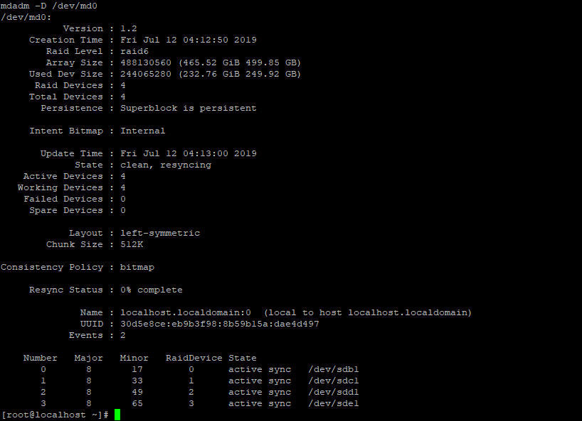
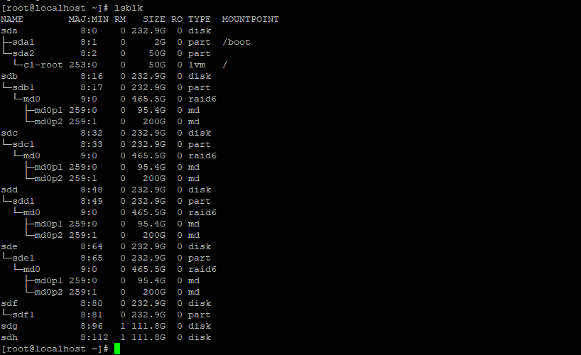
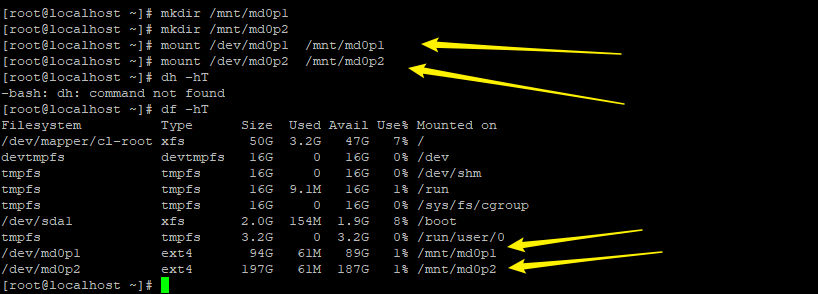
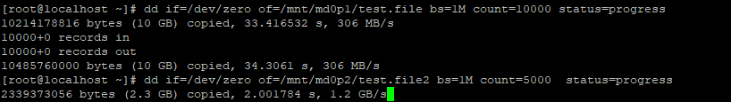
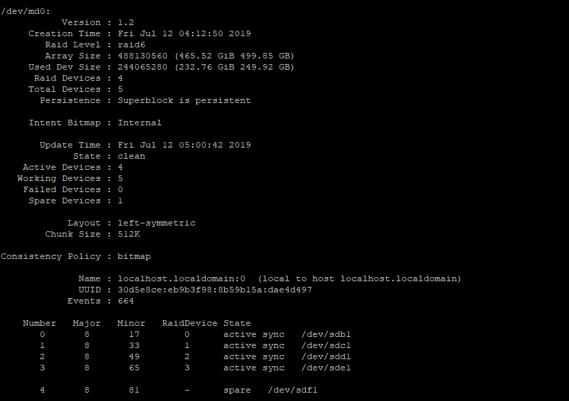
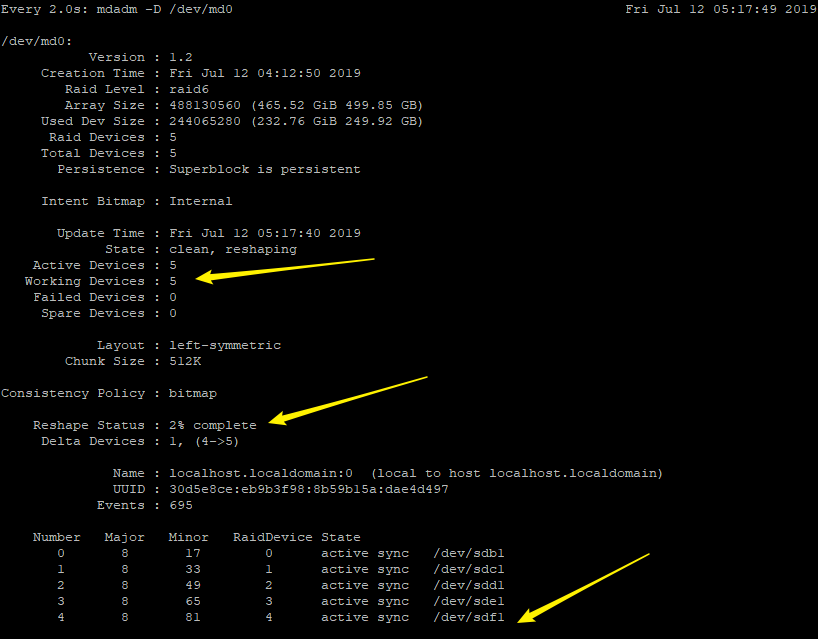
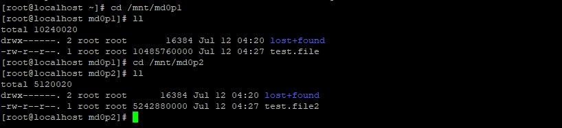

前些时间，写了一个 Raid+LVM的教程，测试和写教程花了不少时间，但是这个方案目前达不到我的要求，故弃坑了
后来了解到Raid也是可以扩容的，因此重新写一个教程
步骤
- 按照上面那个教程，创建出包含4个硬盘的raid6软阵列，这里因为只有5个硬盘能用，不创建热备盘，剩下的一个盘，用来作为添加的盘
这是阵列刚创建好的状态

- 然后用fdisk创建分区，这里暂时创建出两个分区

- 格式化+挂载

- 然后，我随便写入一些东西
# dd if=/dev/zero of=/mnt/md0p1/test.file bs=1M count=10000 status=progress
# dd if=/dev/zero of=/mnt/md0p2/test.file2 bs=1M count=5000 status=progress

- 向阵列增加一个热备盘硬盘（sdf）（注意：磁盘需要初始化，然后创建一个分区，跟上面4块硬盘一样）
# mdadm /dev/md0 -a /dev/sdf1

- 将热备盘增加到阵列中
# mdadm -G -n5 /dev/md0
之后，数据会同步到新添加的硬盘中，这个过程需要时间

同步之后，我们检查一下我们前面创建的文件，没有问题

这个就是RAID的扩容，很简单
老样子，下面罗列一下参考的资料
dd 命令
这个在磁盘操作是很有作用的，包括测试，或者备份，但是一定要注意使用方法，不然有可能毁掉整个硬盘的数据，慎重！
如何在 Linux 系统中使用 dd 命令而不会损毁你的磁盘
https://www.zcfy.cc/article/how-to-use-dd-in-linux-without-destroying-your-disk
在Linux中实现dd命令写入进度的方法，显示图形化百分比的界面
清空磁盘
Raid 扩容
增长现有的RAID阵列和删除Raid中的失败磁盘 - 第7部分
mdadm 管理工具
杂
这个是linux 中国翻译外国教程的一个汇总，没事可以看看
linux 前后台程序查看切换
真正牛*的LVM
写的不错的LVM + raid 教程
很详细的LVM 教程
最后
这是我测试的机器，用了一个模组电源，外加一个pci-e扩展卡，加了8块固态硬盘，32G内存，i7-8700，技嘉z370主板


这里有一个比较坑的地方，就是主板。刚安装完Centos后，无论怎么设置，启动项也修改，硬盘也能识别，就是启动不了，连grub界面都没有。后来找原因，是技嘉主板的一个设置引起的

要选择AHCI这个选项，Intel的傲腾坑啊！
另外，这个主板也是可以开启硬阵列的，开启方法可以Google。不要用到里面的EZ-Raid。家用可以，生产环境跟不上！